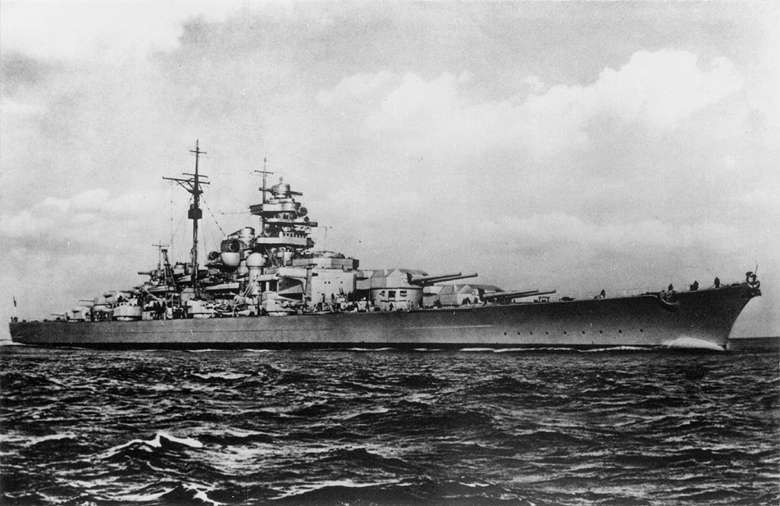
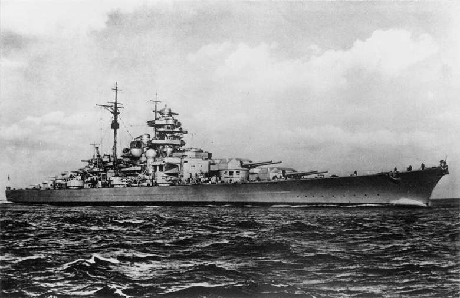

Текст о последствиях войны
Текст о работниках тыла
Текст о ветеранах войны
Текст о маршалах победы
Танковые войска во Вторую мировую войну стали главной ударной силой сухопутных армий, обеспечив высокую мобильность и огневую мощь в наступательных операциях — они прорывали оборону противника, осуществляли глубокие рейды и окружение вражеских группировок. Кроме того, танковые соединения эффективно поддерживали пехоту в обороне, сдерживали продвижение противника и играли решающую роль в ключевых сражениях, определяя исход многих кампаний.
 HMS Vanguard

Гроза Северной Атлантики линкор Тирпиц
HMS Vanguard

Гроза Северной Атлантики линкор Тирпиц
Военно‑Морской флот во Вторую мировую войну обеспечивал защиту морских коммуникаций, перевозку войск и грузов, а также эффективно нарушал морские поставки противника. Кроме того, флот активно содействовал сухопутным войскам в оборонительных и наступательных операциях — вёл артиллерийскую поддержку, осуществлял высадку десантов и обеспечивал прикрытие приморских флангов.
 P51-Mustang
P51-Mustang
Авиация во Вторую мировую войну играла ключевую роль в завоевании господства в воздухе, обеспечении поддержки сухопутных войск и нанесении массированных ударов по стратегическим объектам противника — как в прифронтовой зоне, так и в глубоком тылу. Кроме того, авиация обеспечивала разведку, транспортировку войск и грузов, воздушные десанты, а также осуществляла стратегические бомбардировки, существенно влияя на ход и исход военных кампаний.
Более подробно о технике Второй мировой войны можно прочитать тут.